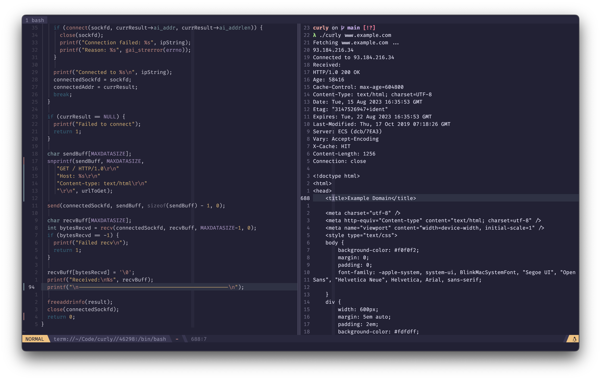

Curly
A minimal clone of cURL using Sockets.
I learn languages best when I use them. After reading the C Bible and doing AoC over the summer I decided rebuild what the OGs at Bell made. I've cloned cURL, cat, tree.

A minimal clone of cURL using Sockets.
I learn languages best when I use them. After reading the C Bible and doing AoC over the summer I decided rebuild what the OGs at Bell made. I've cloned cURL, cat, tree.
